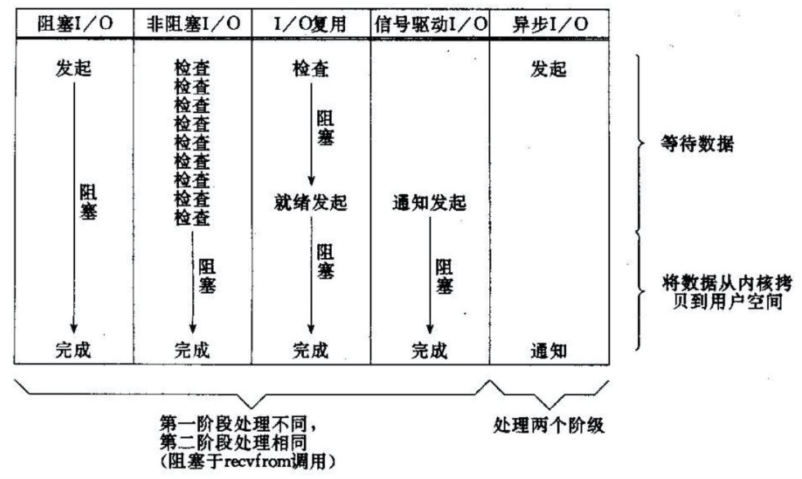
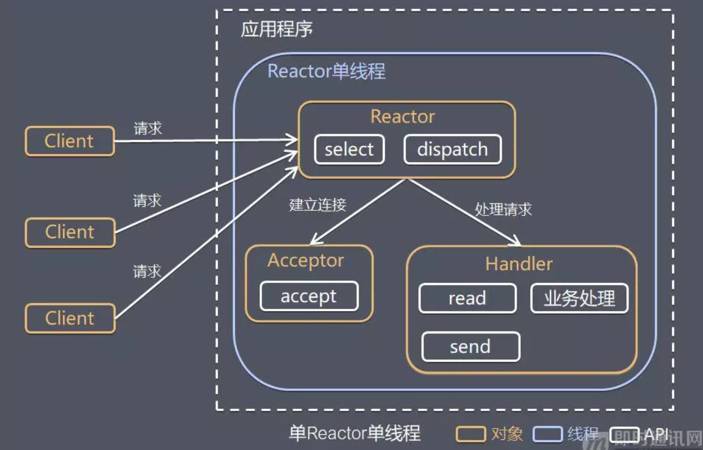
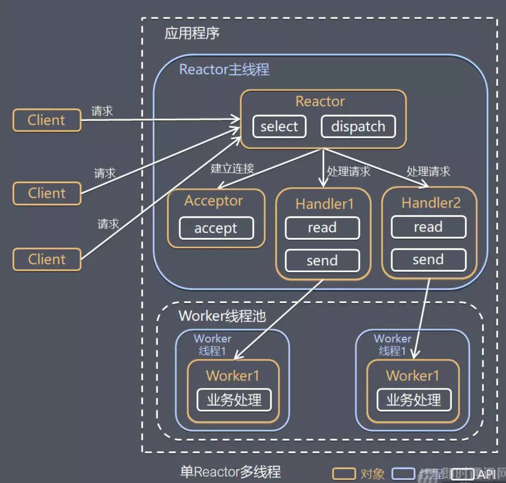
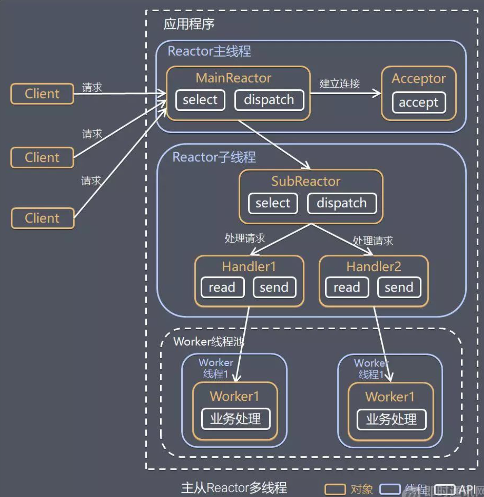
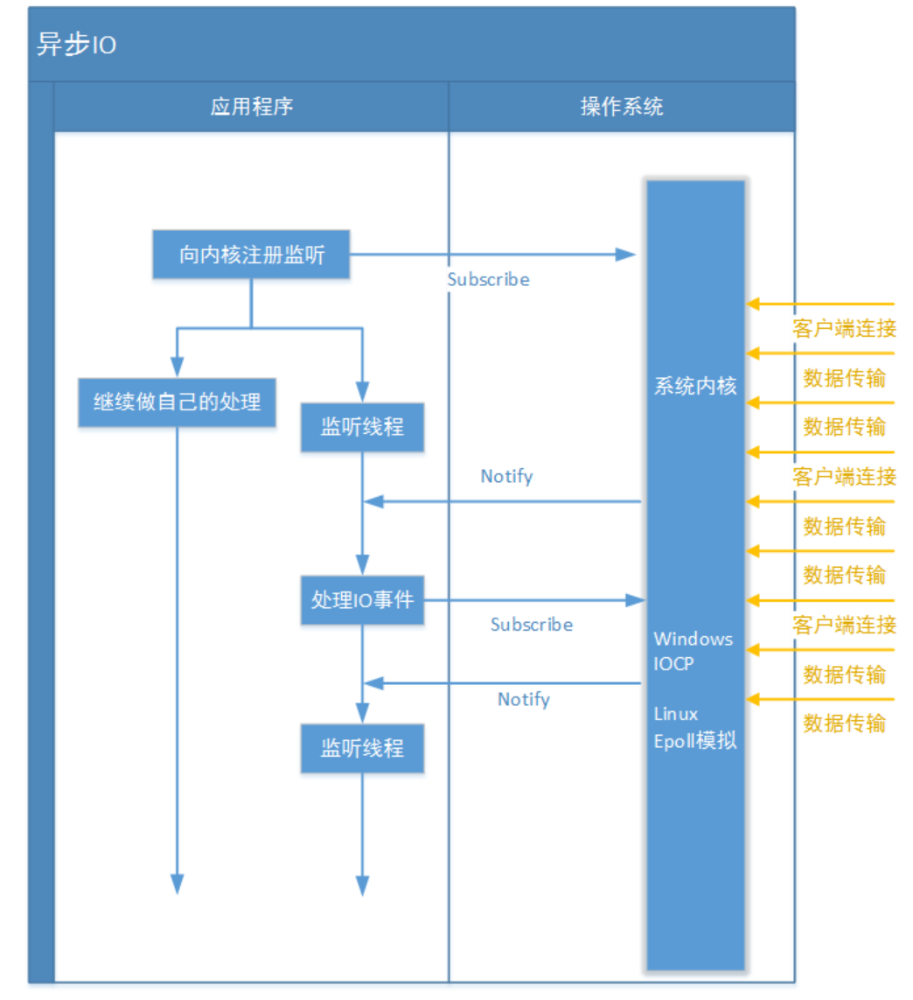
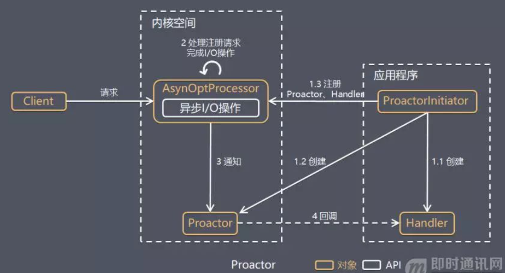

1. I/O
Input/Output的缩写，简单的理解为数据的输入输出，通常有网络IO、磁盘IO。而IO的类型又分为同步/异步IO、阻塞/非阻塞I/O，组合成具体的IO模型。IO属于操作系统层面上的知识，Java只是在操作系统提供的系统调用上封装了操作接口。
所有的系统IO都分为两个阶段：等待就绪和操作。以网络IO举例来说，读函数，分为等待网卡可以读和真正的读；同理，写函数，分为等待网卡可以写和真正的写。
需要说明的是等待网卡就绪的阻塞是不使用CPU的，是在空等；而真正的读写操作的阻塞是在使用CPU的，真正的在干活，而且这个过程非常快，属于内存拷贝，带宽通常在1GB/s级别以上，可以理解为基本不耗时。
操作系统层面上的IO模型包括
- 同步阻塞IO
- 同步非阻塞IO
- 异步非阻塞IO
- IO多路复用
- 信号驱动IO
我们通常在Java中说BIO、NIO、AIO都是在网络IO层面上的，因此处理大量网络连接、连接输入和输出数据的准备（因为数据的输入和输出需要经过网络，所以时延一定不会短）就是关键要处理的问题。
在Java中，JVM读写数据都需要经过操作系统内核
- 发送数据：JVM首先要把数据发送给内核，然后内核把数据交给网卡，网卡将数据通过互联网发送至客户端。
- 接收数据：需要让内核到网卡中查看数据是否已经准备好，如果准备好，则将数据放入内核，内核将数据转交给JVM，JVM再把数据交给我们具体的应用程序；如果没有准备好，通常会被阻塞，也有通过回调方式检测就绪事件（epoll相关）。


2. 阻塞和非阻塞
阻塞和非阻塞的着重点在发起请求后，是否需要等待
- 阻塞：阻塞就是发起一个请求，调用者一直等待请求结果返回，也就是当前线程会被挂起，无法从事其他任务，只有当条件就绪才能继续。
- 非阻塞：非阻塞就是发起一个请求，调用者不用一直等着结果返回，可以先去干其他事情。
3. 同步和异步
同步和异步的着重点在两个任务之间是否需要等待
- 同步：两个同步任务相互依赖，并且一个任务必须依赖于另一任务的某种方式执行。比如在
A->B事件模型中，需要先完成A才能执行B。换句话说，同步调用中，被调用者未处理完请求之前，调用不返回，调用者会一直等待结果的返回。举个例子，我要去买蛋糕和买菜，但是蛋糕还没做好，我需要等待蛋糕做好之后才能去买菜。
- 异步：两个异步的任务完全独立，一方的执行不需要等待另一方的执行。换句话说，异步调用中，调用后就返回，不需要等待结果返回，当结果返回的时候，通过回调函数或者其他方式拿着结果进行处理。举例来说，我要去买蛋糕和买菜，但是蛋糕还没做好，店主说留下地址蛋糕做好之后会送上门，那我立马就能去买菜了。
4. Linux中的select、poll、 epoll
select、poll、 epoll都是Linux内核提供给用户态的多路复用系统调用。进程可以通过一个系统调用函数从内核中获取多个事件。
4.1 select/poll
select实现多路复用的方式是，将已连接的Socket都放到一个文件描述符集合，然后调用select函数将文件描述符集合拷贝到内核中，让内核来检查是否有网络事件产生，检测的方式很粗暴，就是通过遍历文件描述符集合的方式，当检查到有事件产生后，将此Socket标记伟可读或可写，接着再把整个文件描述符集合拷贝回用户态中，随后用户态还需要通过遍历的方法找到可读、可写或可建立连接的Socket，然后再对其处理。
所以，对于select这种方式，需要进行2次遍历文件描述符集合的操作，一次是在内核态中，一个是在用户态中，而且还会发生2次拷贝文件描述符集合的操作，先从用户空间传入内核空间，由内核修改后，再传出到用户空间中。
select使用固定长度的BitsMap，表示文件描述符集合，而且BitsMap所支持的文件描述符的个数是有限的，在Linux系统中，由内核的FD_SETSIZE限制，默认最大值为1024。
poll不再用BitsMap来储存所关注的文件描述符，取而代之用动态数组，以链表形式来组织，突破了select使用BitsMap存储文件描述符个数限制，当然还是会受到系统文件描述符的数量限制。
但是poll和select并没有太大的本质区别，都是使用线性结构储存进程关注的Socket集合，因此都需要遍历文件描述符集合来找到可读或可写的Socket，时间复杂度为O(n) ，而且也需要在用户态与内核态之间拷贝文件描述符集合，这种方式随着并发数上来，性能的损耗会呈指数级增长。
4.2 epoll
epoll在两个方面解决select/poll的问题
第一点，epoll在内核里使用红黑树来跟踪进程所有待检测的文件描述字，把需要监控的socket通过 epoll_ctl() 函数加入到内核中的红黑树里，红黑树是个高效的数据结构，增删查一般时间复杂度是O(logn)，通过维护内核中的这颗红黑树，就不需要像select/poll每次操作时都传入整个socket集合，只需要传入一个待检测的socket，减少了内核和用户态间大量的数据拷贝和内存分配。
第二点，epoll使用事件驱动的机制，内核里维护了一个链表来记录就绪事件，当某个socket有事件发生时，通过回调函数内核会将其加入到这个就绪事件列表中，当用户调用epoll_wait() 函数时，只会返回有事件发生的文件描述符，不需要像select/poll一样遍历整个socket集合，大大提高了检测的效率。

epoll的方式即使监听的Socket数量越多的时候，效率不会大幅度降低，能够同时监听Socket的数目也非常的多，上限就是系统定义的进程能够打开的最大文件描述符个数。因此epoll被称为解决C10K问题的利器。
epoll 支持两种事件触发模式，分别是边缘触发（edge-triggered，ET）和水平触发（level-triggered，LT）：
- 边缘触发（edge-triggered，ET）：当被监控的Socket描述符上有可读事件发生时，服务器端只会从epoll_wait中苏醒一次，即使进程没有调用read函数从内核读取数据，也依然只苏醒一次，因为我们程序要保证一次性将内核缓冲区的数据读完。
- 水平触发（level-triggered，LT）：当被监控的Socket上有可读事件发生时，服务器端不断地从epoll_wait中苏醒，直到内核缓冲区数据被read函数读完才结束，目的时告诉我们有数据要读取（其实从这里就可以看出需要将数据从内核中拷贝到用户态）。
如果使用边缘触发模式，I/O 事件发生时只会通知一次，而且我们不知道到底能读写多少数据，所以在收到通知后应尽可能地读写数据（需要等待接收到所有的数据），以免错失读写的机会。因此，我们会循环从文件描述符读写数据，那么如果文件描述符读写是阻塞的，没有数据可读写时，进程会阻塞在读写函数那里，程序就没办法继续往下执行。所以，边缘触发模式一般和非阻塞 I/O 搭配使用，程序会一直执行 I/O 操作，直到系统调用（如 read 和 write）返回错误，错误类型为 EAGAIN 或 EWOULDBLOCK。
一般来说，边缘触发的效率比水平触发的效率要高，因为边缘触发可以减少 epoll_wait 的系统调用次数，系统调用也是有一定的开销的的，毕竟也存在上下文的切换。
select/poll 只有水平触发模式，epoll 默认的触发模式是水平触发，但是可以根据应用场景设置为边缘触发模式。
5. 同步阻塞（JAVA BIO）
服务端实现模式为一个连接一个线程，所以当有大量连接的时候，线程数可能会超出JVM限制导致应用崩溃，当然可以使用线程池改善，限制线程池的最大线程数以限制最大连接数
在服务端视角，如果有N个客户端通讯，想要知道他们有没有发送数据过来，就需要告诉内核到网卡中查看，如果都没有数据过来，这N个线程就都被阻塞了
5.1 服务端Demo
1
2
3
4
5
6
7
8
9
10
11
12
13
14
15
16
17
18
19
20
21
22
23
24
25
26
27
28
29
30
31
32
33
34
35
36
37
38
39
40
41
42
43
44
45
46
47
48
49
50
51
52
53
54
55
56
57
58
59
60
61
62
63
64
65
66
67
68
69
70
71
72
73
74
75
76
77
78
79
80
81
82
83
84
85
86
87
88
89
90
91
92
93
94
95
96
97
98
99
100
101
102
| import java.io.*;
import java.net.InetSocketAddress;
import java.net.ServerSocket;
import java.net.Socket;
import java.nio.charset.StandardCharsets;
import java.util.concurrent.ExecutorService;
import java.util.concurrent.Executors;
public class BIOServer {
public static void main(String[] args){
new Thread(BIOServer::BIODemo).start();
}
public static void BIODemo(){
try{
ServerSocket serverSocket = new ServerSocket();
serverSocket.bind(new InetSocketAddress("0.0.0.0", 8888), 50);
Socket socket;
while ((socket = serverSocket.accept()) != null){
InputStream inputStream = socket.getInputStream();
byte[] data = new byte[1024];
inputStream.read(data);
System.out.println(new String(data, StandardCharsets.UTF_8));
OutputStream out = socket.getOutputStream();
out.write(data);
socket.close();
}
}catch (IOException e){
e.printStackTrace();
}
}
public static void BIOThreadDemo(){
try{
ServerSocket serverSocket = new ServerSocket();
serverSocket.bind(new InetSocketAddress("0.0.0.0", 8888), 50);
Socket socket;
while ((socket = serverSocket.accept()) != null){
final Socket clientSocket = socket;
new Thread(new Runnable() {
@Override
public void run() {
try{
InputStream inputStream = clientSocket.getInputStream();
byte[] data = new byte[1024];
inputStream.read(data);
System.out.println(new String(data, StandardCharsets.UTF_8));
OutputStream outputStream = clientSocket.getOutputStream();
outputStream.write(data);
outputStream.close();
}catch (IOException e){
e.printStackTrace();
}
}
}).start();
}
}catch (IOException e){
e.printStackTrace();
}
}
public static void BIOThreadPoolDemo(){
try{
ExecutorService executorService = Executors.newFixedThreadPool(10);
ServerSocket serverSocket = new ServerSocket();
serverSocket.bind(new InetSocketAddress("0.0.0.0", 8888), 50);
Socket socket;
while ((socket = serverSocket.accept()) != null){
final Socket clientSocket = socket;
executorService.submit(new Runnable() {
@Override
public void run() {
try{
InputStream inputStream = clientSocket.getInputStream();
byte[] data = new byte[1024];
inputStream.read(data);
System.out.println(new String(data, StandardCharsets.UTF_8));
OutputStream outputStream = clientSocket.getOutputStream();
outputStream.write(data);
outputStream.close();
}catch (IOException e){
e.printStackTrace();
}
}
});
}
}catch (IOException e){
e.printStackTrace();
}
}
}
|
5.2 客户端Demo
1
2
3
4
5
6
7
8
9
10
11
12
13
14
15
16
17
18
19
20
21
22
| import java.io.*;
import java.net.Socket;
public class BIOClient {
public static void main(String[] args) throws IOException {
Socket socket = new Socket("localhost", 8888);
InputStream inputStream = socket.getInputStream();
OutputStream outputStream = socket.getOutputStream();
DataInputStream dataInputStream = new DataInputStream(inputStream);
DataOutputStream dataOutputStream = new DataOutputStream(outputStream);
dataOutputStream.writeUTF("Hello world!");
String response = null;
if((response = dataInputStream.readUTF()) != null){
System.out.println(response);
}
dataInputStream.close();
dataOutputStream.close();
socket.close();
}
}
|
6. 同步非阻塞（JAVA NIO）
JAVA NIO由IO多路复用实现，其中Socket主要的接收连接、读和写函数，在等待就绪阶段都是非阻塞的，真正的I/O操作是同步阻塞的（消耗CPU但性能非常高）。
JAVA NIO中有三个重要的概念，分别是缓冲区Buffer、通道Channel、选择器Selector：
- 缓冲区Buffer：包含一些要写入或者要读出的数据，在NIO库中，所有数据都是用缓冲区处理的。ByteBuffer、IntBuffer、CharBuffer、LongBuffer等都是其实现类。
- 通道Channel：Channel是全双工的，可以通过它读取和写入数据。通道和流的不通之处就是通道是双向的，流是单向的（一个流必须是 InputStream 或者 OutputStream 的子类）。
- 多路复用器Selector：多路复用器提供选择已经就绪的任务的能力，Selector 能够获取就绪的 Channel（Linux中select和poll是轮询来获取就绪的事件，但epoll实现是采用回调方式检测就绪事件，而不是轮询），如果某个 Channel 上面有新的 TCP 连接接入、读和写事件，这个 Channel 就处于就绪状态，会被 Selector 感知，然后通过 SelectionKey 可以获取就绪 Channel 的集合，进行后续的 I/O 操作。
6.1 服务端Demo
1
2
3
4
5
6
7
8
9
10
11
12
13
14
15
16
17
18
19
20
21
22
23
24
25
26
27
28
29
30
31
32
33
34
35
36
37
38
39
40
41
42
43
44
45
46
47
48
49
50
51
52
53
54
55
56
57
58
59
60
61
62
63
64
65
66
67
68
69
70
71
72
73
74
| import java.io.IOException;
import java.net.InetSocketAddress;
import java.nio.ByteBuffer;
import java.nio.channels.SelectionKey;
import java.nio.channels.Selector;
import java.nio.channels.ServerSocketChannel;
import java.nio.channels.SocketChannel;
import java.nio.charset.StandardCharsets;
import java.util.Iterator;
import java.util.Set;
public class NIOServer {
public static void main(String[] args) throws IOException {
ServerSocketChannel serverSocketChannel = ServerSocketChannel.open();
serverSocketChannel.bind(new InetSocketAddress("0.0.0.0", 8888), 50);
serverSocketChannel.configureBlocking(false);
Selector selector = Selector.open();
serverSocketChannel.register(selector, SelectionKey.OP_ACCEPT);
while (true){
selector.select();
Set<SelectionKey> selectionKeys = selector.selectedKeys();
Iterator<SelectionKey> iterator = selectionKeys.iterator();
while (iterator.hasNext()){
SelectionKey key = iterator.next();
if (!key.isValid()){
continue;
}
if(key.isAcceptable()){
ServerSocketChannel serverChannel = (ServerSocketChannel) key.channel();
SocketChannel clientChannel = serverChannel.accept();
clientChannel.configureBlocking(false);
clientChannel.register(selector, SelectionKey.OP_READ);
}else if(key.isReadable()){
ByteBuffer buffer = ByteBuffer.wrap(new byte[1024]);
SocketChannel clientChannel = (SocketChannel) key.channel();
int read = clientChannel.read(buffer);
if(read == -1){
key.cancel();
clientChannel.close();
}else {
buffer.flip();
System.out.println(new String(buffer.array(), StandardCharsets.UTF_8));
clientChannel.write(buffer);
}
}
iterator.remove();
}
}
}
}
|
6.2 客户端Demo
1
2
3
4
5
6
7
8
9
10
11
12
13
14
15
16
17
18
19
20
21
22
23
24
25
26
27
28
29
30
31
32
| import java.io.IOException;
import java.net.InetSocketAddress;
import java.nio.ByteBuffer;
import java.nio.channels.SocketChannel;
import java.nio.charset.StandardCharsets;
public class NIOClient {
public static String[] messages = {
"message1 from client",
"message2 from client"
};
public static void main(String[] args){
try(SocketChannel socketChannel = SocketChannel.open(new InetSocketAddress(8888))){
for(String message: messages){
ByteBuffer writeBuffer = ByteBuffer.allocate(1024);
writeBuffer.put(message.getBytes(StandardCharsets.UTF_8));
writeBuffer.flip();
socketChannel.write(writeBuffer);
ByteBuffer readBuffer = ByteBuffer.allocate(1024);
socketChannel.read(readBuffer);
readBuffer.flip();
System.out.println(new String(readBuffer.array(), StandardCharsets.UTF_8));
}
}catch (IOException e){
e.printStackTrace();
}
}
}
|
6.3 优化线程模型
回忆BIO模型，之所以需要多线程，是因为在进行IO操作的时候，没办法知道硬件读写是否就绪，只能阻塞等待，造成大量的空等从而阻塞需要进行线程切换（浪费大量CPU资源在线程上下文切换）。而NIO通过将通道Channel注册到多路复用器Selector上，达到只有事件就绪才会执行真正的操作，减少空等的时间，提高CPU的利用率（CPU一直都在跑，没有等待），只有调用selector.select()时，没有就绪事件才会被阻塞，而这时没有事件就绪说明不需要处理，阻塞等待也是正常的。
NIO将原来BIO的阻塞读写变成了单线程轮询事件（单Reactor单线程模型），除了事件的轮询是阻塞的，剩余的IO操作都是纯CPU操作，没有必要开启多线程。并且由于节约线程，当连接数大的时候由线程切换带来的问题也随之解决，为海量连接提供可能。单线程处理I/O的效率确实非常高，没有线程切换，只是拼命的读、写、选择事件。但现在的服务器，一般都是多核处理器，如果能够利用多核心进行I/O，无疑对效率会有更大的提高。
分析我们程序的主要功能，包括：
- 网络IO处理，包括accept、read、write等
- 业务逻辑，通过网络获取到需要的数据之后需要对数据进行处理后返回，这里还会有其他的阻塞IO，如DB操作、RPC等
根据功能的线程划分，能够将Reactor线程设计模式分为：
- 单Reactor单线程模型
- 单Reactor多线程模型
- 主从Reactor多线程模型
6.4 Reactor设计模式
Reactor模型是可以处理一个或多个输入源，并通过Service Handler同步的将输入事件（Event）采用多路复用分发给相应的Request Handler（多个）处理的事件驱动模式
Reactor模型用于NIO，是一种思想，多线程的思想。其中定义了三个角色：
- Reactor：负责监听和分配事件
- Acceptor：处理客户端到来的新连接，并分派请求到Handler链中
- Handler：执行非阻塞读写任务，完成数据读入，处理业务逻辑后，将结果写出
6.4.1 单Reactor单线程模型
Reactor、Acceptor、Handler都在一个线程中
优点：模型简单，没有多线程、进程通信、竞争的问题
缺点：无法发挥多核CPU的性能，此外如果业务处理速度比较慢就会影响到程序的高并发性能，任何地方不可用都会导致整个通信模块的不可用
Redis就是这种模型，实际使用的是单线程+队列

6.4.2 单Reactor多线程模型
Reactor主线程中主要负责网络IO相关的处理，包括连接的建立、数据读写，把具体的业务处理逻辑放到线程池中处理
优点：充分利用多核CPU的处理能力，业务阻塞不会影响通信模块
缺点：多线程数据共享和访问的问题，Reactor在单线程中承担所有事件的监听和相应，高并发场景下容易成为性能瓶颈

6.4.3 主从Reactor多线程模型
Reactor主线程中只负责连接的建立，Reactor子线程负责读写数据，在线程池完成业务处理
对连接的处理和读写通常可以选择分开，这样对于海量连接的注册和读写就可以分发到不同的线程中进行处理，在单线程Reactor模型和单Reactor多线程模型中，虽然read()和write()都是效率比较高的非阻塞函数，但Reactor线程毕竟只占用一个CPU内核，如果面对更高的并发则无能为力。主从Reactor多线程模型就能够解决这个问题。
这种模型在许多项目中广泛使用，包括Nginx主从Reactor多进程模型，Memcached主从多线程，Netty主从多线程模型的支持。

7. 异步非阻塞（JAVA AIO）
BIO和NIO对于内核来说，都是应用程序不询问我，我绝不会主动通知的方式
还记得IO操作分为两个阶段：等待就绪和实际操作。在NIO中，等待就绪阶段是不会被阻塞的，但是还是需要实际操作数据，将数据从内核态中拷贝到用户态。AIO解决的就是这个问题，当应用程序发起异步IO之后，内核会完成数据的就绪和将数据从内核态拷贝到用户态中，应用程序并不需要主动发起拷贝动作。
AIO采用订阅-通知的方式：应用程序向操作系统注册IO监听，然后继续做自己的事情。当操作系统发生IO事件，并且准备好数据后，再主动通知应用程序，触发相应的回调函数。如果发起异步读写请求，还需要传入数据缓冲区Buffer的地址（用于存放结果数据）等信息，这样内核才能自动帮我们把数据的读写工作完成。
AIO也是需要操作系统支持，微软的windows系统提供了一种异步IO技术IOCP(I/O Completion Port，I/O完成端口)；Linux下由于没有这种异步IO技术，所以使用的是epoll对异步IO进行模拟
NIO中有一个重要的概念多路复用器Selector，负责替应用查询中所有已注册的通道到操作系统中进行IO事件轮询、管理当前注册的通道集合，定位发生事件的通道等操操作；但是在Java AIO框架中，由于应用程序不是轮询方式，而是订阅-通知方式，所以不再需要Selector(选择器)了，改由channel通道直接到操作系统注册监听，让操作系统回调实际操作函数。

7.1 服务器Demo
1
2
3
4
5
6
7
8
9
10
11
12
13
14
15
16
17
18
19
20
| <dependency>
<groupId>commons-logging</groupId>
<artifactId>commons-logging</artifactId>
<version>1.2</version>
</dependency>
<dependency>
<groupId>org.apache.logging.log4j</groupId>
<artifactId>log4j-api</artifactId>
<version>2.17.1</version>
</dependency>
<dependency>
<groupId>org.apache.logging.log4j</groupId>
<artifactId>log4j-core</artifactId>
<version>2.17.1</version>
</dependency>
<dependency>
<groupId>org.slf4j</groupId>
<artifactId>slf4j-log4j12</artifactId>
<version>1.7.25</version>
</dependency>
|
1
2
3
4
5
6
7
8
9
10
11
12
13
14
15
16
17
18
19
20
21
22
23
24
25
26
27
28
29
30
31
32
33
34
35
36
37
38
39
40
41
42
43
44
45
46
47
48
49
50
51
52
53
54
55
56
57
58
59
60
61
62
63
64
65
66
67
68
69
70
71
72
73
74
75
76
77
78
79
80
81
82
83
84
85
86
87
88
89
90
91
92
93
94
95
96
97
98
99
100
101
102
103
104
105
106
107
108
109
110
111
112
113
114
115
116
117
118
119
120
121
122
123
124
125
126
127
128
129
130
131
132
133
134
135
136
137
138
139
140
141
142
143
144
145
146
147
148
149
150
151
152
153
154
155
156
157
158
159
160
161
162
163
164
165
166
167
168
169
170
171
172
173
174
175
176
177
178
179
180
181
182
183
184
185
186
187
188
189
190
191
192
193
194
195
| import java.io.IOException;
import java.io.UnsupportedEncodingException;
import java.net.InetSocketAddress;
import java.nio.ByteBuffer;
import java.nio.channels.AsynchronousChannelGroup;
import java.nio.channels.AsynchronousServerSocketChannel;
import java.nio.channels.AsynchronousSocketChannel;
import java.nio.channels.CompletionHandler;
import java.util.concurrent.ExecutorService;
import java.util.concurrent.Executors;
import org.apache.commons.logging.Log;
import org.apache.commons.logging.LogFactory;
import org.apache.log4j.BasicConfigurator;
public class AIOServer {
static {
BasicConfigurator.configure();
}
private static final Object waitObject = new Object();
public static void main(String[] args) throws Exception {
ExecutorService threadPool = Executors.newFixedThreadPool(20);
AsynchronousChannelGroup group = AsynchronousChannelGroup.withThreadPool(threadPool);
final AsynchronousServerSocketChannel serverSocket = AsynchronousServerSocketChannel.open(group);
serverSocket.bind(new InetSocketAddress("0.0.0.0", 83));
serverSocket.accept(null, new ServerSocketChannelHandle(serverSocket));
synchronized(waitObject) {
waitObject.wait();
}
}
}
class ServerSocketChannelHandle implements CompletionHandler<AsynchronousSocketChannel, Void> {
private static final Log LOGGER = LogFactory.getLog(ServerSocketChannelHandle.class);
private AsynchronousServerSocketChannel serverSocketChannel;
public ServerSocketChannelHandle(AsynchronousServerSocketChannel serverSocketChannel) {
this.serverSocketChannel = serverSocketChannel;
}
@Override
public void completed(AsynchronousSocketChannel socketChannel, Void attachment) {
ServerSocketChannelHandle.LOGGER.info("completed(AsynchronousSocketChannel result, ByteBuffer attachment)");
this.serverSocketChannel.accept(attachment, this);
ByteBuffer readBuffer = ByteBuffer.allocate(50);
socketChannel.read(readBuffer, new StringBuffer(), new SocketChannelReadHandle(socketChannel , readBuffer));
}
@Override
public void failed(Throwable exc, Void attachment) {
ServerSocketChannelHandle.LOGGER.info("failed(Throwable exc, ByteBuffer attachment)");
}
}
class SocketChannelReadHandle implements CompletionHandler<Integer, StringBuffer> {
private static final Log LOGGER = LogFactory.getLog(SocketChannelReadHandle.class);
private AsynchronousSocketChannel socketChannel;
private ByteBuffer byteBuffer;
public SocketChannelReadHandle(AsynchronousSocketChannel socketChannel , ByteBuffer byteBuffer) {
this.socketChannel = socketChannel;
this.byteBuffer = byteBuffer;
}
@Override
public void completed(Integer result, StringBuffer historyContext) {
if(result == -1) {
try {
this.socketChannel.close();
} catch (IOException e) {
SocketChannelReadHandle.LOGGER.error(e);
}
return;
}
SocketChannelReadHandle.LOGGER.info("completed(Integer result, Void attachment) : 然后我们来取出通道中准备好的值");
this.byteBuffer.flip();
byte[] contexts = new byte[1024];
this.byteBuffer.get(contexts, 0, result);
this.byteBuffer.clear();
try {
String nowContent = new String(contexts , 0 , result , "UTF-8");
historyContext.append(nowContent);
SocketChannelReadHandle.LOGGER.info("================目前的传输结果: " + historyContext);
} catch (UnsupportedEncodingException e) {
SocketChannelReadHandle.LOGGER.error(e);
}
if(historyContext.indexOf("over") == -1) {
return;
}
SocketChannelReadHandle.LOGGER.info("=======收到完整信息，开始处理业务=========");
historyContext = new StringBuffer();
this.socketChannel.read(this.byteBuffer, historyContext, this);
}
@Override
public void failed(Throwable exc, StringBuffer historyContext) {
SocketChannelReadHandle.LOGGER.info("=====发现客户端异常关闭，服务器将关闭TCP通道");
try {
this.socketChannel.close();
} catch (IOException e) {
SocketChannelReadHandle.LOGGER.error(e);
}
}
}
|
7.2 Proactor设计模式
Reactor是用于非阻塞同步的设计模型，Proactor是用于异步IO的设计模型
Proactor整体上与Reactor一致，区别在于Proactor模式将所有IO操作都交给内核处理，工作线程仅仅负责业务逻辑。Proactor关注的不是就绪事件，而是完成事件，这是区分Reactor模式的关键点。
Proactor模型主要包括四个角色：
- Procator Initiator：负责创建Handler和Procator，并将Procator和Handler（作为回调）都通过Asynchronous operation processor注册到内核
- Handler：执行业务流程的业务处理器
- Asynchronous operation processor：负责处理注册请求，并完成IO操作。完成IO操作后会通知Procator
- Procator：根据不同的事件类型回调不同的handler进行业务处理

参考资料：
Java NIO浅析
JAVA中BIO、NIO、AIO的分析理解
Java I/O模型、BIO、Reactor线程模型基本介绍
五分钟快速理解 Reactor 模型
Java AIO - 异步IO详解
如何深刻理解Reactor和Proactor？
【死磕 NIO】— Proactor模式是什么？很牛逼吗？
这次答应我，一举拿下 I/O 多路复用！